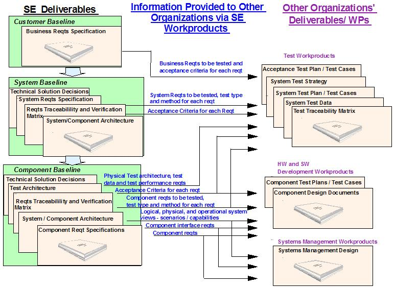

| Roadmap: How to adopt the Systems Engineering practice |
 |
|
Integrating the Practice with a Delivery ProcessThe Systems Engineering practice focuses on the six technical baselines that are created. The six baselines are:
When integrating the Systems Engineering practice with delivery processes, the first step is to determine which baselines are applicable to the project. Some baselines may be not needed; for example, the Test Baseline may not be applicable if the project does not include a system, integration, performance, or acceptance test that is separate from the component test. An example of such a project could be a minor functional upgrade to a single application. Other baselines may be combined due to schedule issues and/or lack of system complexity. In all cases, it is important to verify that the necessary baseline information is captured in some form. These baselines are shown in the figure below. Baseline details and tailoring guidelines are also provided. Of the six baselines, three of them are created by the Systems Engineering team or the customer to provide the technical solution details to the development, test and Service Management teams. These baselines provide the business, system, and component requirements for the project. These baselines are 1) the Customer Baseline, 2) the System Baseline, and 3) the Component Baseline. As shown in the figure below, these baselines provide the development, test, and service management teams with the requirements to enable the teams to effectively build and test the system. Also, the project’s technical baseline has been defined such that the project manager can effectively manage the project.  The other three baselines, the Design Baseline, the Test Baseline, and the Production Baseline, are created by the development organizations, the test organizations, and project manager. These baselines describe how these organizations will implement (or have implemented) the requirements that were created by the first three baselines. As with all practices, there are external inputs (work products) to the practice that must be provided from the base delivery process or other practices and there are work products and deliverables that are created by this practice that will be used as inputs to the base delivery process and other practices. When integrating the Systems Engineering practice with a delivery process, it is vital to make sure that the inputs and outputs between the practice and the delivery process are in synch. While it is optimal if the input/output work products and deliverables exactly match, this is not essential. It is essential that the necessary information within the input work product is created by the output work product; it is not essential that the exact work product is provided as input. Thus, when there is a ‘mismatch’ of input / output work products between the practice and the delivery process, the practitioner must determine whether the information needed as input (by the practice or the delivery process) is actually provided by another work project that is output (by either the delivery process or practice). Tailoring the PracticeNote: When combining reviews/baselines or tailoring a baseline out of the practice, ensure that all components of all reviews are incorporated into the reviews that are held for the project. Standard review items may only be excluded if not applicable to the project; they should not be excluded based on a particular standalone review not being held. The practice may be tailored in several ways:
When tailoring individual work products to be produced by the practice, the practitioner must verify that either the work product is not needed by the project or that the relevant work product information is being provided by another work product within the practice or within the overall delivery process. When tailoring individual activities of tasks to be performed by the practice, the practitioner must verify that the activities/tasks and the work products created by the tailored activities/tasks are not needed by the project or that the activities/tasks and the work products created by the tailored activities/tasks are replaced by other activities/tasks/work products. Since work products created by one activity/task are used in subsequent activities/tasks, the practitioner must verify that the necessary information is created within some project task. When tailoring the technical baselines of the practice, the practitioner must verify that the outputs of the baselines are created by some other project activities. The output of one baseline is used as inputs to the subsequent baselines. This provides the traceability from customer needs through system design, system test, acceptance test, and the delivered system. The following examples show tailoring that can be performed to the capability pattern and reasons for the tailoring. There may be other tailoring reasons for specific projects. Combining the BRR and the SRRIf the Business Requirements Review (BRR) is held, then the customer business requirements are reviewed at the BRR, and any changes to the requirements baseline since the BRR will be reviewed at the System Requirements Review (SRR). If the Business Requirements Review (BRR) is not held, the customer business requirements are reviewed and approved as part of the System Requirements Review (SRR). The customer business requirements are listed and traced to the system requirements in the SRR. The SRR template provides guidance on how the gathered requirements are defined and reviewed. Customer business requirements and system requirements are typically two different sets of requirements, but may be one set of requirements if the customer provides system-level requirements or if the project is small or not complex. Combining the PDR with the SRR and/or the CDRThe PDR may be excluded and its material covered within the project’s SRR and CDR. When the PDR is excluded, the project’s requirements are completely defined in the SRR and the design is completely defined in the CDR. Reasons for conducting the reviews this way include:
There may be other reasons to combine these reviews for a specific project. System and component requirements may be one set of requirements if the project encompasses only one component or application, and the project team decides not to allocate requirements to a lower level than the application. In this case, the system requirements are all allocated to a single component, and the system requirements are equal to the component requirements. Depending on the project size, scope, and team structure, the system requirements document may be updated with component requirements or a separate component requirement document may be created. If the requirements are combined in a single document, then a ‘Consolidated Requirements Document’ is created that contains all requirements rather than having a separate System Requirements Specification and separate Component Requirements Specification(s). If a ‘Consolidated Requirements Document’ is created, then the project team should consider adding the business requirements to the document in order to consolidate all levels of requirements into a single document. Combining the TRR and the PRRIf there is not a separate Systems Integration Test (e.g., in small projects all testing may be performed by the development teams), then the TRR may be skipped and the relevant TRR information is reviewed at the PRR. For example, the PRR would review the development test results rather than the Systems Integration Test results. Process Slots Populated
|
{kind=link}
| Concepts |
|---|
| © Copyright IBM Corp. 1987, 2012 All Rights Reserved Property of IBM These materials are intended only for use as part of an IBM engagement |